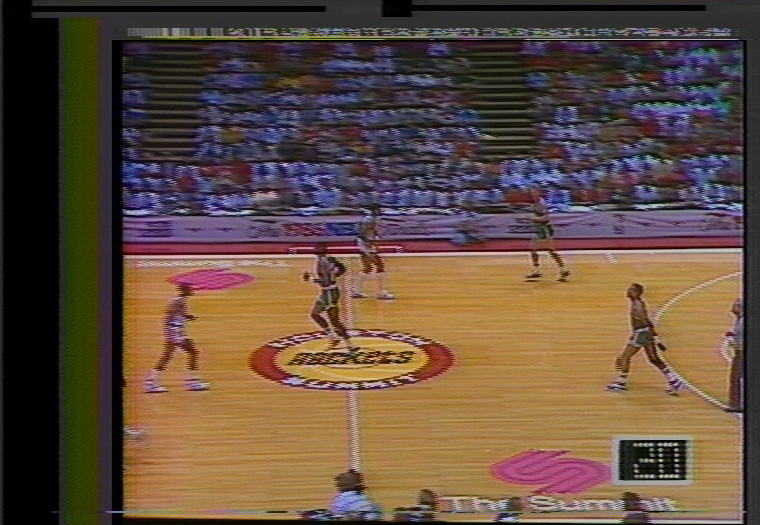
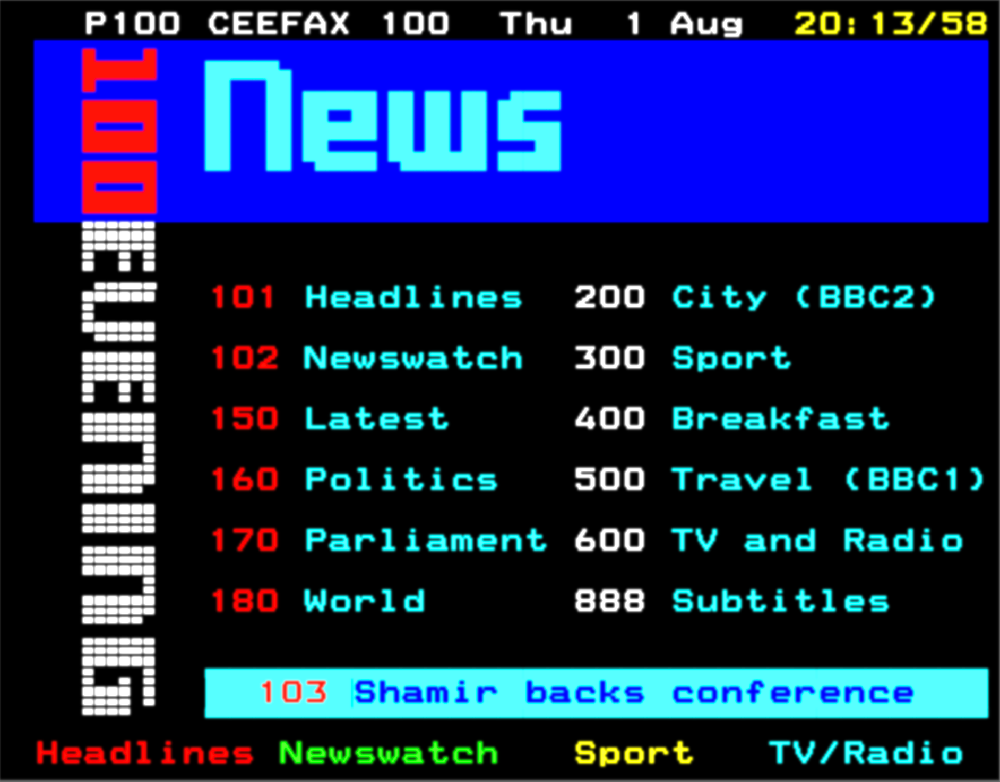

NOTE
This site is under construction.
Archiving Teletext
How is teletext recovery still possible all these years later? Have a look for yourself!
Picture This...
Someone in the 1980s, let's say 1985, records their favorite program from CBS, NBC, or TBS onto their choice of videotape (Betamax or VHS). After the program, they might use that same tape to record other programs, but once it's full, onto the shelf it goes. What this person might not have realized is that besides recording a TV program, they recorded something else that they couldn't visibly see on their TV screen, something that has seemingly become forgotten here in the U.S.: teletext.
Wait... Really?
It's true! Most people have likely transferred a videotape in their lives, whether it's a home movie or a TV broadcast. I (the creator of this site) have done my fair share of videotape transfers going back to 2011. Like most people who have transferred videotape, I only assumed the only content on the tape was the programming content I was transferring. It wasn't until around 2025 when I realized just how much I was missing by transferring videotape the usual conventional way, which for me was transferring to a DVD recorder, then importing the files onto my computer.
How, Though?

In the days of analog TV, there was an unused portion of the video signal called the vertical blanking interval (VBI). TVs normally do not show the VBI, so many don't know it's there. The VBI can hold things such as CEA-608 closed captioning (sometimes called Line 21 captions since these captions were on Line 21 of the VBI), vertical interval timecode (VITC), test signals, and even data. I'm not going to go into the specifics of what the VBI is, so I'll link the Wikipedia article for that.
When a program was recorded to videotape, not only was the program itself recorded, but the VBI was recorded as well. Whatever was present in the VBI at the time of the recording was preserved in the videotaped recording. This means that, if recording a program with Line 21 captions, those captions remained in the recording. Moreover, this means that if someone recorded a network with a teletext feed, such as TBS, the teletext was also preserved in the VBI.
Some high-profile teletext services include CBS's ExtraVision, NBC's NBC Teletext, and Keyfax/Electra, the previous two being included in TBS's VBI, with Electra replacing Keyfax in the mid-1980s. ExtraVision and NBC Teletext used a standard known as the North American Broadcast Teletext Standard (NABTS), while Keyfax/Electra use the pre-existing World System Teletext (WST) standard.
Wait, What Are Those?
Those are the different standards used here in the U.S.; Europe only used the WST standard. The primary difference concerned the graphical capabilities of both. WST relied heavily on text, while the NABTS relied on text and graphics. To that point, the graphical capabilities of NABTS exceeded the WTS.
WTS (Electra/Keyfax)

NABTS (ExtraVision/NBC Teletext)

Do Capture Cards Work?
It sort of depends. Your standard, extremely cheap USB capture device, such as an EZ Cap, will not work. Transferring tapes via a DVD recorder will also not work. While this method does preserve the closed captions, it doesn't preserve the VBI itself. There are certain older Hauppauge WinTV capture cards, used with Linux, that can grab the VBI, but according to someone familiar, this can be "hit or miss".
How Do I Get Started?
The best way to preserve the VBI when transferring videotape is by transferring videotape via the FM RF method using software tools such as VHS-Decode. The wiki on the GitHub repository contains a section for tapping into the FM RF test ports on various VCR models and provides steps for getting started.
After the transfer, the produced file, a U8 file (sometimes compressed to FLAC) will need to be decoded. These are not video files as VHS-Decode does not transfer conventional video like a standard capture device. Rather, it transfers the raw FM video signal on the videotape. Again, refer to the VHS-Decode GitHub wiki for more information.
During the decoding process, this will produce several files, but the
important one is a TBC (time base correction) file. From there, you
can use VHS-Decode's built-in ld-analyse tool to view the
TBC file, which will show the decoded video (though from there, the
video needs to be exported and merged with the separate audio file,
but once again, refer to the wiki). However, there is another, more
recent software tool called
Decode-Orc. Both software tools support decoding various data in the VBI, such
as Line 21 CC and VITC, but if decoding teletext,
this is the software to use, as it supports both NABTS and WST standards. The teletext part of
the software, while officially released, is still under development.
As more members of the tape archiving community use the software and
discover bugs and other issues, the software will improve over time.